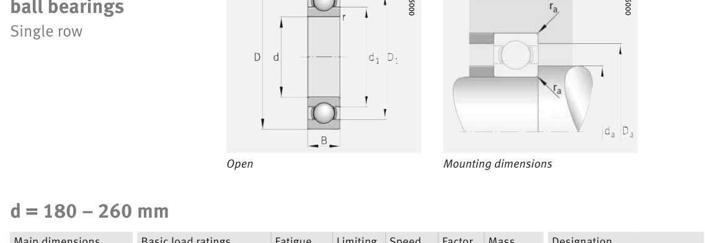

Original catalogue drawing - FAG Schaeffler HR 1, page 274

Scanned from the manufacturer catalogue page listing this part number. All part numbers printed on that table share the same drawing.
Scale cross-section
Blue = inner / outer ring, yellow = rolling element. Drawn to scale from this part's own
dimensions for selection reference only - not a manufacturing or assembly drawing.
Dimension table (mm / inch)
Symbol
Dimension
mm
inch
d
Bore diameter
180
7.0866
D
Outside diameter
250
9.8425
B
Inner-ring / bearing width
33
1.2992
r
Chamfer (min)
2
0.0787
Notes
Weights are given in kg. Load ratings are shown in both the original catalogue units and the converted value (1 N = 0.2248 lbf). Data is provided for selection reference only - confirm against the latest official catalogue before ordering.
Main dimensions
Bore d (mm)
180
Outside dia. D (mm)
250
Width B (mm)
33
Inner-ring OD d1 (mm)
202.2
Inner-ring shoulder dia. D1 (mm)
228.9
Load ratings & speeds
Basic dynamic load rating Cr (lbs)
29450
Basic static load rating Cor (lbs)
30574
Basic dynamic load rating Cr (N)
131000
Basic static load rating C0r (N)
136000
Fatigue limit load Cur (N)
5400
Factor f0
16.4
Limiting speed nG (rpm)
3,500
Reference speed nB (rpm)
3,200
Weight
Weight (kg)
4.22
Mounting dimensions (fillets / shoulders)
Housing fillet r max (mm)
2
Shaft shoulder da (mm)
188.8
Housing shoulder Da (mm)
241.2
Housing fillet ra max (mm)
2
Bearing life (ISO 281 basic rating life)
C / P
Equivalent load P (N)
L10 (106 rev)
L10h at 1,100 rpm
4
32,750
64
970
6
21,833
216
3,273
8
16,375
512
7,758
10
13,100
1,000
15,152
15
8,733
3,375
51,136
Basic rating life per ISO 281: L10 = (C/P)3 with C = 131,000 N. Hours = L10 x 106 / (60n). Life-modification factors for lubrication, contamination and temperature (aISO) are not included.
Source & traceability
Brand
FAG
Source catalogue
FAG / Schaeffler Rolling Bearings HR 1
Catalogue page
p.274 (dimensions)
Load ratings in newtons, fatigue limit load Cur, limiting speed nG and reference speed nB.
Send us the quantity you need and we will come back with price and
lead time, normally within 24 hours. Equivalent parts from other brands can be quoted at the same time.